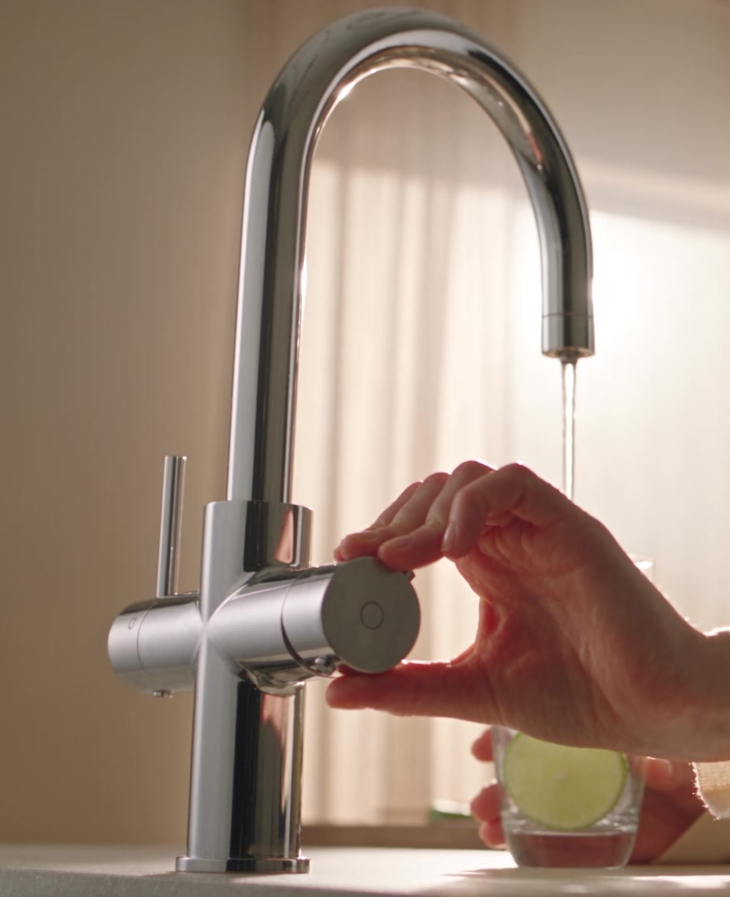

One tap does it all.
Every water your kitchen asks for, from one quiet tap.
- 01
Boiling
Tea in the time it takes to reach for a cup.
- 02
Sparkling
Fresh bubbles every glass. No more flat bottles.
- 03
Filtered
Clean drinking water, straight from the tap.
- 04
Hot
For washing up and everyday cooking.
- 05
Cold
Just water, the way it should be.
One tap replaces
- The kettle.
- The filter jug.
- The soda machine.
- The bottles.
Fewer things. A calmer kitchen.
Boiling only when you mean it.
Boiling water flows only when you push the dial and turn it at the same time. Small hands can't do it by accident.
Try it. Press and hold the dial
Push.Turn.Boiling.
Made to be looked at.
Brushed steel and one clean arc. Nothing to hide, and nothing to add.

Good to know.
Is it safe with children around?
Yes. Boiling water needs a push and a turn at the same time, so it can't start by accident.
What if something goes wrong?
Every Farless comes with a 5-year warranty.
Does it really replace the kettle?
Yes. Boiling water is ready the moment you turn the dial. No waiting, no refilling.
Will I run out of sparkling water bottles?
There are no bottles to run out of. Sparkling water comes straight from the tap.